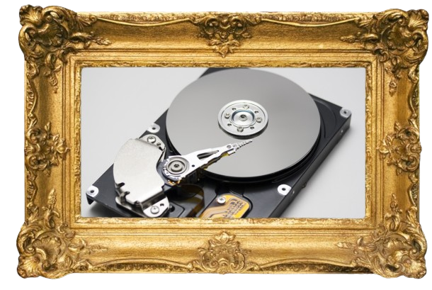

Opslag

Opslag zorgt ervoor dat gegevens permanent kunnen worden bewaard, zelfs als de computer wordt uitgeschakeld. (Wel zo handig)
De verschillende soorten opslag:
- Optische opslag: Zoals cd’s en dvd’s, die gegevens opslaan met behulp van lasers.
- Elektronische opslag (SSD): Snelle opslag zonder bewegende delen, zoals SSD-schijven.
- Cloud opslag: Opslag op externe servers, toegankelijk via het internet.